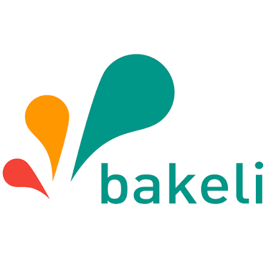

Qui peut postuler ?
Jeunes de 18 à 35 ans, résidant au Sénégal, passionnés par le numérique.

Bourses Volkeno × Bakeli
Choisissez parmi nos 6 parcours professionnalisants de 6 mois. Chaque formation bénéficie de 25 bourses Volkeno couvrant 70 % des frais.

Cette initiative vise à rendre les compétences numériques accessibles à tous les jeunes motivés du Sénégal.
Jeunes de 18 à 35 ans, résidant au Sénégal, passionnés par le numérique.
150 bourses au total, soit 25 bourses par filière de formation.
Disponibilité à temps plein, motivation et 150 000 FCFA de participation.
Formations éligibles
Conçus pour répondre aux besoins du marché. Chaque programme est axé sur la pratique, avec des projets concrets et un accompagnement personnalisé.
Apprenez à exploiter les données pour prendre des décisions stratégiques et développer des modèles prédictifs.
Développez vos soft skills et intégrez le monde professionnel avec confiance.
Maîtrisez la conception et la sécurisation d'APIs avec Node.js, Express et MongoDB.
Gérez des marques, créez des contenus engageants et lancez des campagnes performantes.
Comprenez le rôle des systèmes d'information et maîtrisez les outils informatiques et bureautiques professionnels.
Concevez des visuels puissants et des vidéos captivantes avec Photoshop, Illustrator et Premiere Pro.
Entre 50 et 60 % des étudiants sélectionnés bénéficieront d'un stage de 3 mois dans une entreprise partenaire du Groupe Volkeno.
Travaillez sur de vrais projets avec impact.
Accompagnement personnalisé tout au long du stage.
Possibilité de CDI dans l'entreprise d'accueil.
Processus simple
4 étapes simples pour rejoindre l'aventure Bakeli
Sélectionnez la formation qui correspond à vos ambitions.
Pour mesurer votre motivation et vos compétences de base.
Pour mieux comprendre votre projet professionnel.
Finalisez votre inscription en payant la première tranche.
Les candidatures sont ouvertes jusqu'au 31 décembre 2026
Voir la liste des parcours